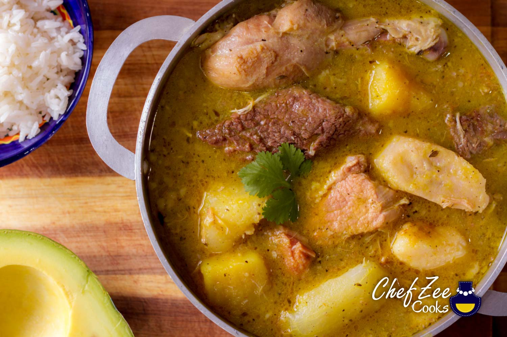

Sancocho

Description
This Caribbean stew is chock full of meat and veggies that are sure to satisfy
your large apatite. Serve over rice and enjoy!
Ingredients
- Pork, beef, chicken, or a combination of the three
- Smoked pork neck bones
- Salt
- Pepper
- Oregano
- Adobo
- Whole allspice
- Sofrito (Here is a great recipe: link)
- Chicken Bouillon
- Lime
- Vegetables (plantains, corn, carrots, yuca, yauita, auyama)
- Herbs (cilantro, recao cilantro, thyme
Steps
- Trim meat fat and rinse with lemon juice or vinegar
- Season the meat with 1 teaspoon of adobo, 1/2 teaspoon of pepper, 1 teaspoon oregano and sofrito
- In a 6 quart pot, heat up oil over medium high heat
- Add meat to pot, sear until brown all around
- Cover the pot with a lid ad lower heat to medium
- Let the meat cook until tender, about 30 - 40 minutes
- Add water as needed throughout so that the meat doesn't burn
- While the meat cooks, peel and cut the vegetables into 1-inch pieces, except for the squash, which you want to peel and cut into two large pieces
- Remove meat from pot and set aside for later
- Add all the vegetables to the pot and add water until you've filled ¾ of the pot. Bring to a boil
- When the water begins to boil, add the chicken bouillon and allspice or malagueta. Let it cook for about 15 - 20 minutes
- When the squash is tender, remove it from the pot and blend it with ½ cup of liquid from the pot and ½ cup of cool water until the mixture is smooth. Then, pour it back into the pot
- sing cooking twine, tie together tightly cilantro, culantro (cilantro ancho), and thyme and add it to the pot. Let it simmer on medium heat for about 20 more minutes
- Stir in ½ teaspoon of adobo, ½ teaspoon of oregano, red pepper flakes, salt and pepper to taste
- Add the meat back into the pot and let it all simmer until the vegetables are tender, about 10 - 20 minutes
- With a colander, remove the herbs bundle we added earlier and the malagueta
- Stir in freshly squeezed lime juice before serving
- Serve warm with rice and fresh avocado
Buen Provecho! (Enjoy your meal!)